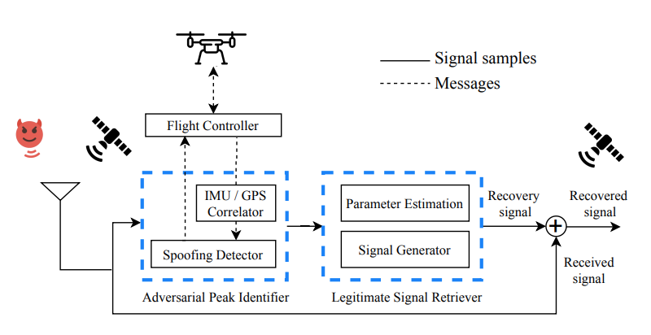

GPS is everywhere and so is spoofing!
Today, Global Positioning System (GPS) is critical to a wide variety of safety and security-critical applications. The use of GPS is so ubiquitous that it plays an enabling role in 14 out of 16 industries classified as critical infrastructure by the US Department of Homeland Security. Due to the lack of authentication in civilian navigation messages, GPS is vulnerable to signal spoofing attacks. In a GPS signal spoofing attack, the attacker transmits specially crafted signals that imitate satellite signals with power high enough to overshadow the legitimate signals.
SemperFi: Anti-spoofing GPS Receiver for UAVs
A single-antenna GPS receiver for UAVs that autonomously recovers and continues to output legitimate location even against strong adversaries capable of stealthy and seamless takeover. SemperFi leverages a combination of the Extended Kalman filter based GPS failsafe mechanism built into majority of UAVs and a custom designed legitimate signal retriever module to detect and autonomously recover from majority of spoofing attacks. We develop algorithms to carefully synthesize recovery signals and extend the successive interference cancellation technique to preserve the legitimate signal’s ToA, while eliminating the attacker’s signal. For strong adversaries capable of stealthy and seamless takeover, SemperFi uses brief maneuvers designed to exploit the short-term stability of inertial sensors and identify stealthy spoofing attacks.
Features
In SemperFi we introduce Adversarial Peak Identifier (API) that is reponsible for detecting spoofing attack and distinguishing the attacker’s signal from the legitimate GPS signals. Based on the information provided by the API,  the LSR synthesizes an appropriate recovery signal that eliminates the spoofing signal using a successive interference cancellation (SIC) technique. For identification of adversarial signals we introduce active spoofing verification that forces the UAV to execute a maneuver in a scenario where an adversary is capable of gradually introducing location offsets without triggering any detection mechanisms. We rely on the auxiliary peak tracking technique that has been shown to be highly effective against stealthy seamless takeover adversaries to initiate the maneuver. SemperFi is designed as a pluggable module that outputs spoofer-free GPS signals identical to legitimate satellite signals. Therefore, SemperFi allows an unmodified COTS GPS receiver to process and generate location and time estimates without any disruption. It can recover from an attack by executing flight patterns less than 100 m in length, recovering the true location within 0.54 s with an accuracy of less than 20 m (in majority of the cases identification maneuver is not required) on popular embedded platforms such as Jetson Nano and Xavier.
Try out SemperFi!
We release the design, implementation of SemperFi and the GPS spoofing traces that used to evaluate SemperFi to the community for usage and further research. SemperFi's source code and the necessary instructions are available on Github. Send us an email to receive the test datasets.
This work was partially supported by NSF grant 1850264 and ECCS-1845833.
Please feel free to contact us at hello@semperfi-gps.com for more information">